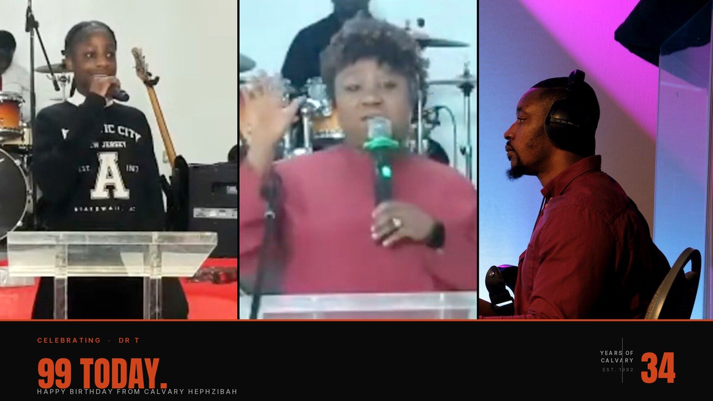
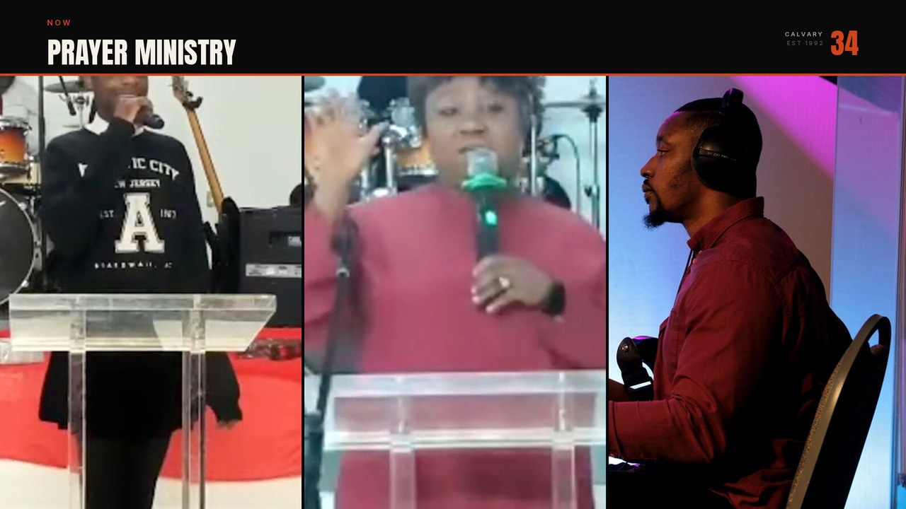

Calvary Hephzibah · 34th Anniversary
Overlay run sheet.
The graphics, in programme order. Each item lists which overlays to fire and when. Fire one at a time, hold for 5–8 seconds for name supers and section markers, 10–15 seconds for the anniversary banner, then clear before firing the next.
01
Welcome · Bible Reading · Opening Prayer
Lead: Pastor Shade Olatoye
10 min
10:30–10:40
Open the service
Fire the anniversary banner first as Pastor Shade walks up — this sets the day. Hold for 10–15 seconds, then clear. Once she begins, fire her name super for 5–8 seconds.

1
Anniversary banner

2
Welcome section marker

3
Pastor Shade name super
02
Praise & Worship
Lead: Calvary Worship Team
20 min
10:40–11:00
Song-by-song supers
Fire the worship section marker at the very start. Then as each song begins, fire its song super for 5–8 seconds. Only two song supers currently exist (Trading My Sorrows, Friend of God) — the set list may need more.

1
Worship section marker

2
Song · Trading My Sorrows

3
Song · Friend of God
03
Communion
Lead: Visiting Minister
10 min
11:00–11:10
Visiting minister name TBC
The communion super is generic ("Visiting Minister") since the specific name isn't confirmed. If a name comes through before Sunday, ask Bolaji to regenerate.

1
Communion section marker
2
Visiting Minister name super
{kind=link}
04
Welcome Address
Lead: Pastor Shade Olatoye
10 min
11:10–11:20
1
Welcome Address marker
{kind=link}
2
Pastor Shade name super
05
Presentation
Segment: Visual presentation
3 min
11:20–11:23
What's in the presentation?
Content of the 3 presentation slots is currently unspecified. If they're video, switch scene to the playback source. If they're slides, switch to the main screen feed. Fire the generic Presentation marker either way.
1
Presentation marker
{kind=link}
06
Sermon — Reasons to be Thankful
Preacher: Pastor Gbenga Adebanjo
25–30 min
11:23–11:53
Sermon opening sequence
Fire the anniversary banner as Pastor Gbenga is invited up. Hold 10s, clear. Fire The Word section marker for 5s. Then fire his name super for 5–8s once he settles. If a sermon scripture is read aloud, fire the scripture super (placeholders exist, may need regenerating with the actual passage).
1
Anniversary banner

2
The Word section marker

3
Pastor Gbenga name super
07
Welcome to All · Brief Announcements
Lead: Pastor Kayode Ogungbenro · inc. birthdays · Dr T's 99th
5 min
11:53–11:58
Dr T's 99th birthday — moment of the day
Fire the Announcements marker at the start of item 7. When Pastor Kayode reaches Dr T's birthday specifically, fire the dedicated 99 TODAY birthday super for 10–12 seconds. This is the standout human moment — give it screen time and don't rush it.
1
Announcements marker
{kind=link}

2
Pastor Kayode name super

3
Dr T · 99 Today birthday super
{kind=link}
08
Offering
Ministering in song: Evangelist Bola Paul · D'Voice Ministries
15 min
11:58–12:13

1
Offering section marker
2
Evangelist Bola Paul name super
{kind=link}
09
Presentation
Segment: Visual presentation
3 min
12:13–12:16
1
Presentation marker
10
Show of Appreciation & Honour
Lead: Pastor Shade Olatoye
10–12 min
12:16–12:28
The signature anniversary moment
Pastor Shade honours members by name. Fire the Appreciation marker at the start. Hold her name super as she begins. Worth flashing the anniversary banner once during this segment as a punctuation moment if it flows naturally.
1
Appreciation & Honour marker
{kind=link}
2
Pastor Shade name super
11
Presentation
Segment: Visual presentation
3 min
12:28–12:31
1
Presentation marker
12
Video Greeting
From: Reverend Olowodola
~5 min
12:31–12:36
Video segment — scene switch required
This is a pre-recorded video. Switch the OBS scene to the video playback source. Fire the Video Greeting marker for the first 5–7s so viewers know what they're watching, then clear. Hold the Rev Olowodola name super for 5–8s during the video. Clear before the video ends so the end of his message is unobstructed.
1
Video Greeting marker
{kind=link}
2
Rev Olowodola name super
{kind=link}
13
Prayer Ministry
Lead: Visiting Ministers
5 min
12:36–12:41

1
Prayer Ministry marker
{kind=link}
14
Grace & Blessing of the Meal
Element: Spoken blessing
5 min
12:41–12:46
1
Grace & Blessing marker
{kind=link}
15
The Meal
Lead: Hospitality Team — Janet Oviri
60–75 min
12:46–14:01
Fellowship time — overlays optional
Fire The Meal marker briefly as fellowship begins, then clear. After that the broadcast can hold on a wide room shot or cut. No further overlays are needed unless something programmed comes up.
1
The Meal marker
{kind=link}
16
Closing Prayer
Lead: Pastor Shade Olatoye
5 min
~14:01
1
Closing Prayer marker
{kind=link}
2
Pastor Shade name super
3
Anniversary banner
All files
Full inventory of overlay PNGs. Tap a row to download. Use these when you need to fire something off-script (e.g. a name super for someone speaking unexpectedly).

Pastor Shade Olatoye
01-name-pastor-shade.png

Brother Michael Kabalu
02-name-michael-kabalu.png

Pastor Kayode Ogungbenro
03-name-pastor-kayode.png

Pastor Gbenga Adebanjo · Preaching
04-name-pastor-gbenga.png

Welcome (section)
05-section-welcome.png

Worship (section)
06-section-worship.png

Communion (section)
07-section-communion.png

Testimony (section)
08-section-testimony.png

Offering (section)
09-section-offering.png

The Word (section)
10-section-word.png

2 Chronicles 20:15
11-scripture-jehoshaphat.png

Psalm 33:3
12-scripture-psalm-33.png

Song · Trading My Sorrows
13-song-trading-my-sorrows.png

Song · Friend of God
14-song-friend-of-god.png

Anniversary banner
15-anniversary-banner.png

Auntie Pauline · Testimony
16-testimony-pauline.png
Visiting Minister · Communion
17-name-visiting-minister-communion.png
Evangelist Bola Paul
18-name-bola-paul.png
Reverend Olowodola
19-name-rev-olowodola.png
Welcome Address (section)
20-section-welcome-address.png
Presentation (section)
21-section-presentation.png
Announcements (section)
22-section-announcements.png
Appreciation & Honour (section)
23-section-appreciation.png
Prayer Ministry (section)
24-section-prayer-ministry.png
Grace & Blessing (section)
25-section-grace.png
The Meal (section)
26-section-meal.png
Closing Prayer (section)
27-section-closing-prayer.png
Dr T · 99 Today
28-birthday-dr-t.png
Video Greeting (section)
29-video-greeting-olowodola.png